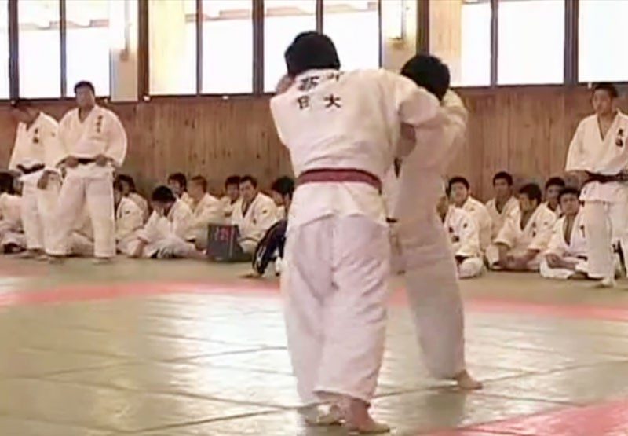
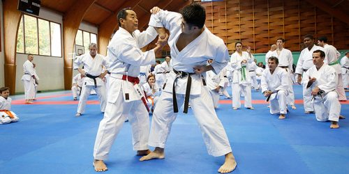
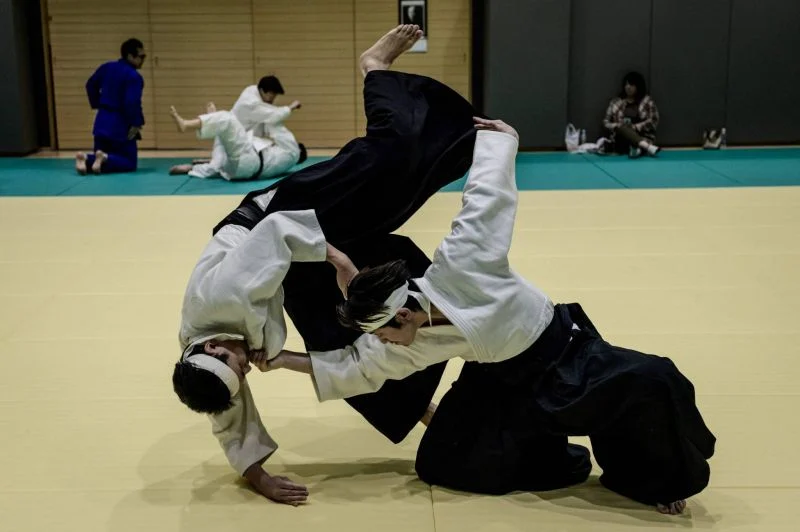
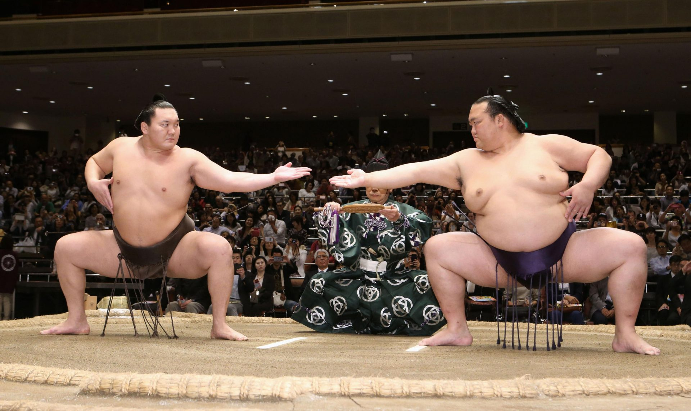
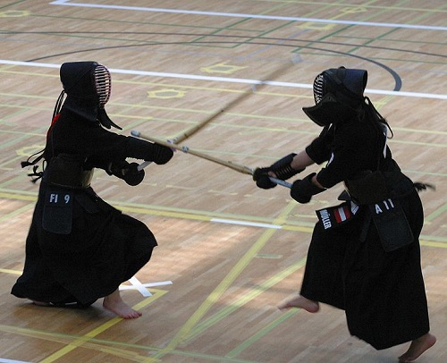
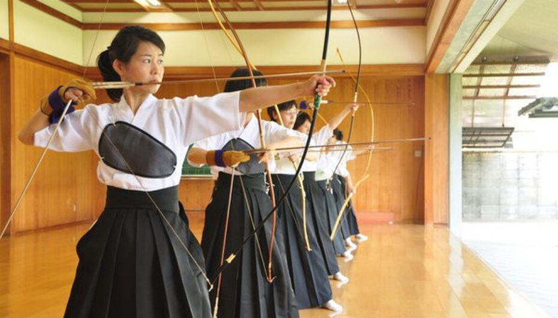
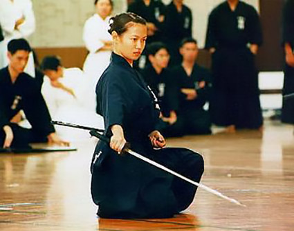

combat
Le Judo, la voie de la souplesse
Pas besoin de vous présenter cet art martial japonais très connu à l’étranger. Le judo demeure le 4ème sport le plus pratiqué en France avec pas moins de 600 000 licenciés. Par ailleurs, notre pays collectionne les médailles olympiques de judo. Issu du Jiu-Jitsu, cette discipline consiste utiliser différentes prises pour faire tomber son adversaire ou l’immobiliser au sol. Les combattants ou judokas portent un kimono blanc maintenu par une ceinture dont la couleur varie du blanc au noir pour indiquer leur niveau. Les grades de progression s’expriment en DAN, comme dans la plupart des arts martiaux. Outre les performances techniques, l’esprit est fortement sollicité dans ce sport de combat. Cet art martial inventé par Jigoro Kano apparaît en 1882 afin de moderniser et transmettre la pratique traditionnelle du ju-jitsu utilisée par les samouraï. Signifiant « Voie de la souplesse », le judo est à l’image du roseau qui se ploie pour laisser passer la neige alors que les branches des cerisiers cassent sous le poids.
Le Karaté, un art martial qui en jette
Originaire de l’île d’Okinawa, le karaté est un sport de combat assez spectaculaire. Aussi, il n’est pas rare de voir cet art martial dans certains films d’action à l’image du célèbre Jean-Claude Van Damme. Loin des clichés véhiculés par le cinéma, le karaté est avant tout un art spirituel. Le karaté est une pratique de self-défense très ancienne qui utilise des techniques de frappes et de projections. Dans la pratique, les coups sont arrêtés avant de blesser l’adversaire. Le combat se pratique à main nue en utilisant uniquement le corps et l’esprit. Les karatékas apprennent des enchaînements de techniques codifiées nommées KATA ainsi que les positions et déplacements de base. Si cette discipline utilise la force et la dextérité pour combattre, le mental est prédominant. En kanji, Kara signifie « vide » et « Te » désigne « main ». Ainsi, Karate peut se traduire par « vacuité » (ou "l'état de ce qui est vide") au sens bouddhique du terme. Cette pratique est née à Okinawa, une île située entre le Japon et la Chine. Crée en 1938 par Gichin Funakoshi, le Shōtōkan Ryu est le style de karaté le plus pratiqué avec pour meilleur représentant le célèbre maître Hirokazu Kanazawa.
L’aïkido, un art de vivre
Représentant moderne des valeurs des samouraï, l’aïkido est un art martial qui s’inspire de la philosophie shinto, zen et tao. Cette pratique sans heurt mélange plusieurs disciplines telles que le combat à main nue, le maniement du sabre ou du bâton, la maîtrise de la respiration tout en développant les facultés de concentration. L’objectif ultime étant de canaliser son adversaire tout en utilisant sa propre impulsion contre lui. La défense étant proportionnelle à l’attaque. Ce sport qui collectionne les clés de bras et les techniques d’immobilisation permet de s’élever spirituellement. Inventé par Morhei Ueshiba vers les années 1925, l’aïkido s’inspire des arts martiaux anciens. Fondé sur des principes de paix et d’harmonie, cet art japonais se veut une pratique non violente ou toute compétition est exclue.
Le sumo, sport sacré au Japon
Indissociable de la culture japonaise, l’art du sumo n’est plus à présenter. Ce combat de lutte qui met deux gros bonshommes en culottes courtes face à face est l’emblème du sport national au Japon. Les combattants, ou sumotoris, s’affrontent sur un cercle d’argile, par des techniques de lutte. Ils ne doivent pas sortir du cercle ni toucher le sol avec autre chose que leurs pieds. En règle générale, plus t’es gros mieux c’est … un pied de nez pour le culte de la minceur. Associé à la religion Shinto, le sumo viendrait d’anciens rituels qui servaient à honorer les dieux. Tout comme le jujitsu, le sumo serait né du combat de deux kamis (ou divinités japonaises). Aujourd’hui, les lutteurs sont encore considérés comme des dieux par les Japonais.
Le Kendo, l’art de manier le sabre
Issu du Kenjustu, le kendo est sans doute le plus ancien des arts martiaux japonais modernes. Ce sport qui reprend les techniques d’escrime utilisées par les samouraïs est très populaire au Japon. Très pratiqué en compétition, le kendo permet de développer sa force mentale et sa détermination. Les combattants manient un sabre en bambou (le shinay) qu’ils tiennent à deux mains. Ils sont équipés d’une armure et protégés par un casque. Aussi, ils utilisent différentes techniques de frappes tout en poussant des cris pour symboliser leur détermination dans l’affront.
Le Kyudo, ou la voie de l’arc
Art martial datant de l’époque des samouraïs, le Kyudo consiste à apprendre les techniques traditionnelles de tir à l’arc ainsi que les valeurs spirituelles qui l’entourent. L’arc conçu d’une seule pièce en bambou est grand et élégant. Le matériel est utilisé avec respect et dévotion. Cette discipline très raffinée s’inscrit dans la recherche de la perfection, que ce soit dans la technique ou dans la vie personnelle. On travaille la posture, la tenue de l’arc, la gestuelle, la concentration et la précision tout en adoptant une philosophie zen. Le Japon compte de nombreuses compétitions de Kyudo chaque année. Ce sport qui allie l’esthétique à la technique et à la spiritualité est l’un des plus authentiques des arts martiaux japonais. Dérivée du Kyujutsu, ou tir à l’arc pratiqué par les guerriers, la discipline se développe particulièrement à l’ère Edo, avec l’essor de la culture japonaise et des arts traditionnels.
Iaido, la quête de l’unité et de la maîtrise de soi
Inspirée des techniques d’entraînement des samouraïs, cet art martial qui demande contrôle et précision absolue est en plein essor aujourd’hui. Appelée iai-jutsu pendant la période des Bushis, l’iaido était l’art de dégainer le sabre et de trancher. Plus tard, la discipline prend un sens plus spirituel qui relève de la maîtrise de soi. L’iaido se pratique essentiellement sous forme de Kata ou mouvements codifiés. Ce sport non ouvert à la compétition s’exerce seul. Les lames sont tranchantes ou non selon les pratiques et le niveau de l’élève. Il existe de nombreuses écoles d’iaido au Japon, Par ailleurs, ce sport d’adresse se développe particulièrement en Europe.
